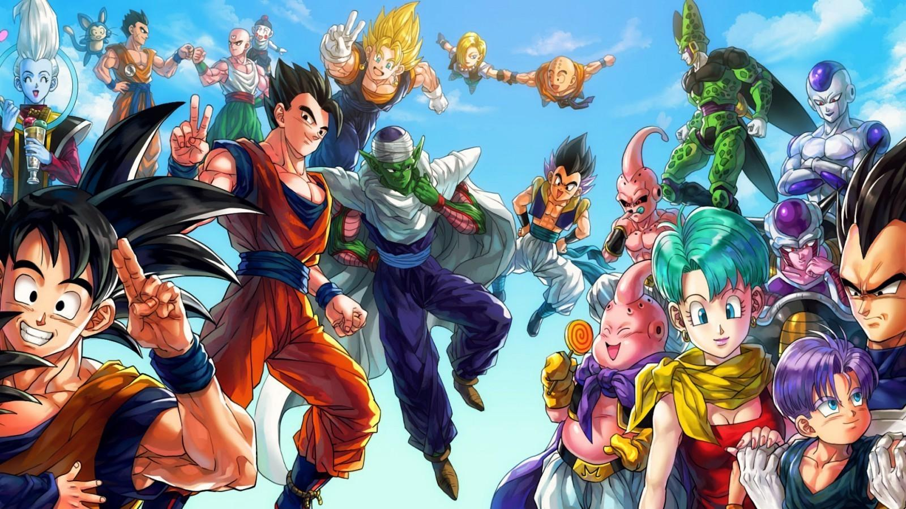

Goku
"As pessoas fortes não derrubam as outras, elas ajudam-nas a se erguerem."
Son Goku é o personagem principal do anime e mangá Dragon Ball (do autor e desenhista Akira Toriyama), e por
isso
mesmo aparece em todas as suas continuações, como Dragon Ball Z, Dragon Ball GT, além dos ovas e filmes.

Vegeta
"Eu sou calmo e tenho o coração puro...
Mas é pura maldade."
Vegeta é um personagem de Dragon Ball que faz sua primeira aparição na saga Saiyan. Ele é o príncipe da raça
guerreira Saiyan, que se orgulha de sua habilidade de luta e destruição. Ainda é um personagem complexo e
multifacetado, com um passado turbulento que o levou a se tornar o vilão que ele é no início da série.

Gohan
"Eu não gosto de lutar, mas vou fazer isso por todos que eu amo."
Son Gohan, também conhecido apenas como Gohan, é um personagem fictício da franquia Dragon Ball criado por
Akira Toriyama. Ele aparece na segunda parte do mangá, que corresponde ao anime Dragon Ball Z. Gohan é filho
do protagonista Goku com sua esposa Chi-Chi e o primeiro híbrido entre humano e Saiyajin mostrado na série,
seu nome é uma homenagem ao avô adotivo de seu pai, Son Gohan que foi aluno de Mestre Kame, assim como Goku.

Kuririn
"Falando sobre uma situação ruim… Goku, Gohan e Vegeta não conseguiram nem derrotar esse monstro, então que
chance eu tenho contra ele? Mas se eu não tentar... então não sobrará ninguém para proteger meus amigos!"
Kuririn é um protagonista em Dragon Ball. Kuririn teve uma breve rivalidade com Goku quando se conheceram e
treinaram com Mestre Kame, mas eles logo viraram melhores amigos. Um dos mais poderosos e talentosos
Terráqueos, Kuririn é corajoso, um aliado fiel e bom.

Piccolo
"Não subestime a força de um Namekuseijin."
Piccolo é introduzido em Dragon Ball ainda na série clássica de Akira Toriyama, com Goku já adulto. Seu
objetivo era se vingar e derrotar Goku para dominar o mundo, já que é filho de Piccolo Daimaoh, o primeiro
vilão de toda a franquia que foi morto por Kakaroto ainda criança.

Yamcha
"Isso foi horrível, esses dois são monstros, não pessoas comuns."
Yamcha é um personagem que apareceu em Dragon Ball Clássico, sendo um ladrão que roubava os viajantes. Certo
dia, deparou-se com Bulma e Goku, tentou roubar as Esferas do Dragão dos personagens, mas não obteve
sucesso, seguindo os personagens por um bom tempo antes de tornar-se amigo destes.

Tenshinhan
"Que se ferre os níveis de poder, que se ferre os Super Saiyajins, e você... vai se ferrar! Shin Kikohoo!!"
Tenshinhan é um poderoso guerreiro, um mestre de artes marciais, e um dos mais poderosos terráqueos. Por
causa de sua educação dura, Tenshinhan é inicialmente frio e sem coração, pensando em nada além de explorar
inocentes e infligir dor.

Trunks Do Futuro
"Há algo que quero te contar. Você está vivo no meu futuro."
Trunks do Futuro, referido na série apenas como Trunks, é o híbrido Terráqueo e Saiyajin filho de Vegeta e
Bulma do futuro alternativo. No tempo que Trunks do Presente nasceu, a linha do tempo já havia mudado pelas
viagens do tempo de Trunks do Futuro e Cell. Então, os dois Trunks viveram vidas totalmente diferentes (ao
contrário dos outros que viveram a mesma vida até o ponto em que as linhas do tempo diferem: três anos antes
dos androides chegarem).

Chaos
"Obrigado Tenshinhan, fui muito feliz ao seu lado. Adeus!"
Chaos é um terráqueo pequeno, de pele branca e bochechas vermelhas que aparece no manga Dragon Ball e nos
animes Dragon Ball e Dragon Ball Z, também fazendo pequenas aparições em Dragon Ball GT e Dragon Ball Super.
Ele é a companhia constante de Tenshinhan, seu melhor amigo, e junto com ele, era um dos alunos de Mestre
Tsuru.

Chichi
"Não me importa o futuro da terra, o que mais me interessa são os estudos de Gohan!"
Chichi é a filha de Rei Cutelo, que se torna esposa de Goku (devido à uma promessa feita por Goku quando
ambos eram crianças) e mãe de Gohan e Goten. Quando criança Goku prometeu se casar com ela, Chichi costumava
ser tímida e muito gentil. Porém, quando adulta, a mesma se torna extremamente temperamental e irrita-se
facilmente, tornando-a uma mãe super-protetora e arrogante.

Bulma
"Não sei se você é amigo do Vegeta ou não é, mas você "esculhambou" o meu aniversário de 38 anos!"
Bulma é filha do Dr. Briefs, o fundador da Corporação Cápsula, uma empresa fictícia que produz cápsulas para
armazenamento de objetos. Assim como seu pai, Bulma é uma cientista brilhante, além de inventora e
engenheira. As invenções de Bulma têm grande importância em certos pontos da série.

Goten
"A pessoa mais forte do mundo deve ser a mamãe, e não você papai."
É o segundo e mais novo filho do principal par de Dragon Ball, Goku e Chichi. Como seu irmão mais velho,
Gohan, é um híbrido, ter sangue de Saiyan nele permite que ele tenha habilidades de Saiyan, mesmo sendo
capaz de se transformar em um super Saiyan.

Trunks
"É uma decepção descobrir que o meu futuro é tão meia boca assim."
Trunks é um protagonista do manga Dragon Ball e dos animes Dragon Ball Z, Dragon Ball GT, e Dragon Ball
Super. Ele é o filho de Bulma e Vegeta, e mais tarde o irmão mais velho de Bra. Ele também é chamado de Kid
Trunks, para diferenciar de seu equivalente do futuro alternativo.

Mestre Kame
"Pelos meus discípulos! Se movimentem direito, aprendam direito, lutem direito, comam direito, e descanssem
direto, e aproveitem a vida com tudo o que ela tem para oferecer. O estilo Kame está vivo em vocês, esse vai
ser o meu maior e mais poderoso... KamehameHA!"
Mestre Kame foi o treinador de Goku , Kuririn e Yamcha . Porém, ele é mais conhecido por ser o personagem
mais pervertido de todo o mundo de Dragon Ball. Em Dragon Ball, Mestre Kame apareceu diversas vezes, sendo
considerado um dos personagens principais e mais fortes. Porém, com o passar do tempo, todos os personagens
ficaram mais fortes e superaram Mestre Kame. Mesmo assim, todos os treinados por ele mantém o respeito e o
chamam de mestre.

Mr Satan
Satan é o vencedor do Torneio de Artes Marciais, um título vencido honestamente derrotando outros humanos
normais durante o tempo em que Goku e os outros estavam batalhando em Namekusei e depois contra os
Androides. Durante o tempo dos Jogos de Cell, Mr. Satan já era rico e famoso, e também egomaníaco.

Pan
"Dameda."
Pan é a filha de Videl e Gohan, e a neta de Goku e Chichi como também de Mr. Satan e Miguel. Ela é a bisneta
do Rei Cutelo e Bardock. Pan é amiga de Bra e Trunks, os filhos de Vegeta e Bulma.

Videl
Videl é uma personagem de apoio no manga Dragon Ball, e nos animes Dragon Ball Z, Dragon Ball GT e Dragon
Ball Super. Ela é a filha de Mr. Satan e Miguel, e se torna a esposa de Gohan e a mãe de Pan.

Oolong
Oolong é um protagonista no manga Dragon Ball e sua adaptação de anime Dragon Ball, fazendo poucas aparições
em Dragon Ball Z e Dragon Ball GT. Ele é um porquinho antropomórfico e transformista que encontra Bulma e
Goku em sua busca pelas Esferas do Dragão. Após sua aventura, ele começa a viver na Corporação Cápsula na
Capital do Oeste. Ele tem um grande papel no começo de Dragon Ball, mas ao fim de Dragon Ball Z, ele só
aparece de vez em quando com Mestre Kame.

Pual
Pual ou Puar, é um gato afiliado a Yamcha desde sua primeira aparição. Junto do ladrão, ele barrava pessoas
no deserto, se denominando o guarda costas de seu melhor amigo.

Zeno
Em Dragon Ball Super, Zen-Oh foi apresentado como o Rei dos Universos. Um ser à primeira vista frágil,
pequeno e só, mas que comanda medo e respeito sobre as divindades mais poderosas da saga. Na nova série
existem 12 universos, mas inicialmente eram 18.

Bills
Em Dragon Ball Super, Zen-Oh foi apresentado como o Rei dos Universos. Um ser à primeira vista frágil,
pequeno e só, mas que comanda medo e respeito sobre as divindades mais poderosas da saga. Na nova série
existem 12 universos, mas inicialmente eram 18.

Whis
Em Dragon Ball Super, Zen-Oh foi apresentado como o Rei dos Universos. Um ser à primeira vista frágil,
pequeno e só, mas que comanda medo e respeito sobre as divindades mais poderosas da saga. Na nova série
existem 12 universos, mas inicialmente eram 18.

Dainshinkan
Em Dragon Ball Super, Zen-Oh foi apresentado como o Rei dos Universos. Um ser à primeira vista frágil,
pequeno e só, mas que comanda medo e respeito sobre as divindades mais poderosas da saga. Na nova série
existem 12 universos, mas inicialmente eram 18.